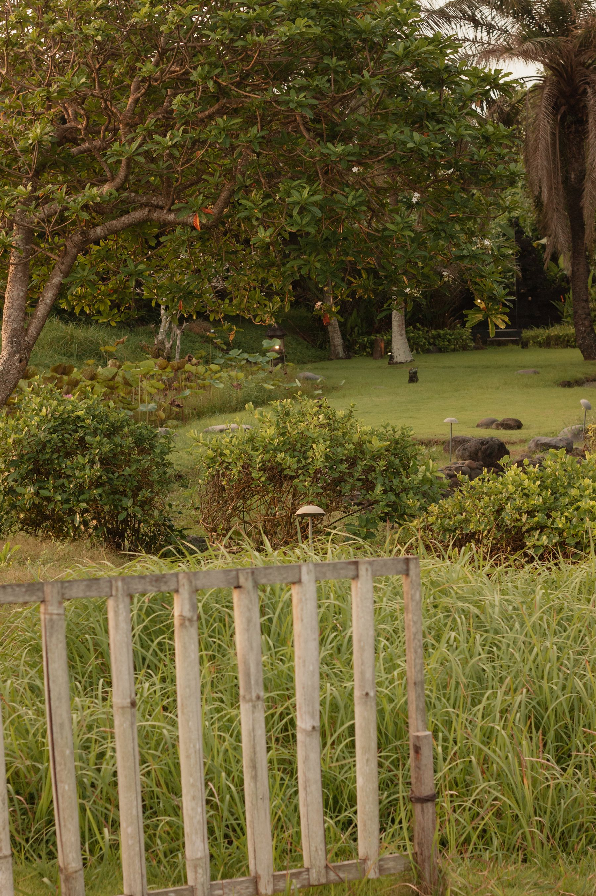
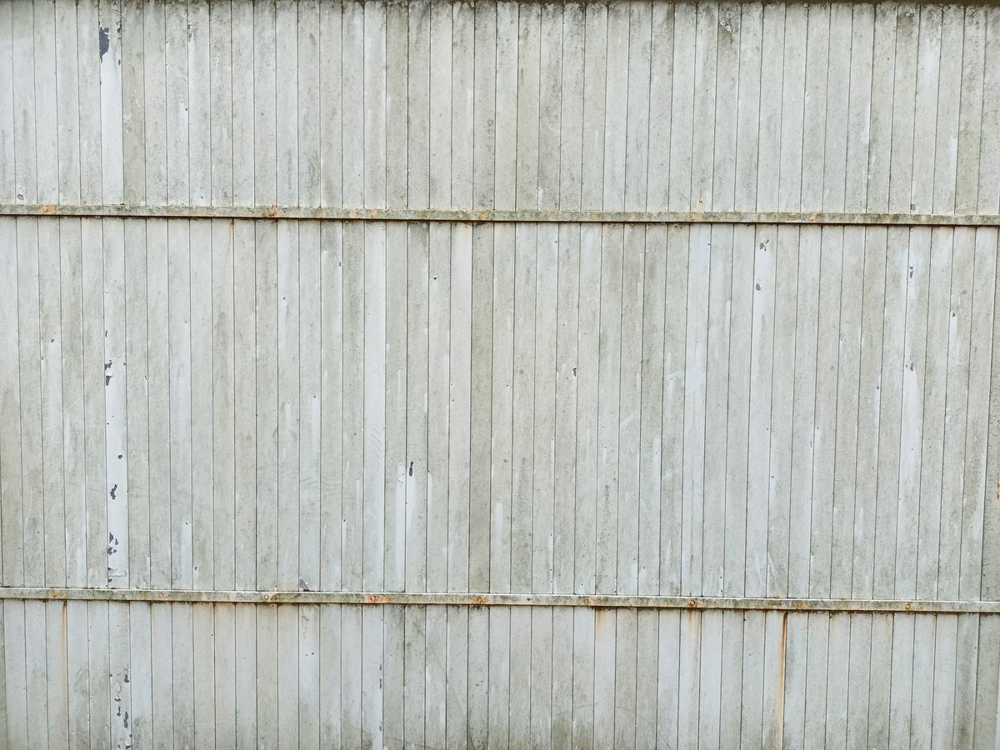
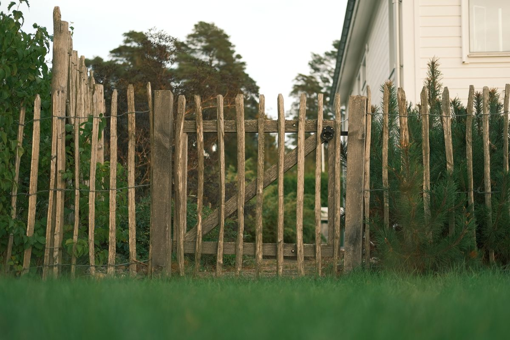
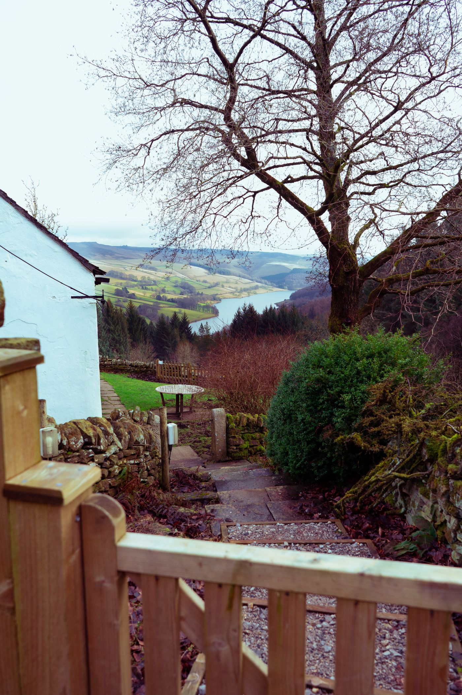

Expert Assessment
Start with the site, project goals, fence type, and the practical needs of the property.
Quality fences. Stronger homes. Better outdoors.
Serving Thousand Oaks & surrounding areas
Fence installation & repair
Wood, vinyl, chain link, gates, and fence repair for properties in Thousand Oaks and surrounding areas.
Thousand Oaks Fencing Pros
Choose the material and style that fits your space, from warm wood and low-maintenance vinyl to practical chain link, custom gates, and targeted repairs.
Our services

Natural warmth, privacy, and a classic look for outdoor spaces.

A clean, versatile option designed for low-maintenance outdoor living.
A practical, durable boundary for residential and functional spaces.
Access that works with the fence and the way you use your property.
Focused repairs for damaged, worn, or misaligned fence sections.
From property line to finished fence
A straightforward process keeps the project focused on the right material, layout, and finished result for your space.
Start with the site, project goals, fence type, and the practical needs of the property.
Align on the scope and key project details before work moves forward.
Move through installation with an organized, property-conscious approach.
Complete the fence with careful alignment, clean transitions, and a finished look.
The Thousand Oaks direction
Fence styles

Local service area
Planning a wood, vinyl, chain link, gate, or repair project? Share the property details and fence type to get started.
Request an Estimate →Frequently asked questions
Still have questions? Send the details of your property and project through the estimate form.
Ask About Your ProjectWood fences, vinyl fences, chain link fences, gate installation, and fence repair are included in the site’s service offering.
Thousand Oaks and surrounding areas. Include your property location in the estimate request so the project can be reviewed.
Use the request form and provide your name, contact information, and the type of fence project you are considering.
Yes. Choose fence repair in the estimate form and include the best contact information for follow-up.
Better outdoors start here
Choose your project type and share the best way to reach you.
Request an Estimate →